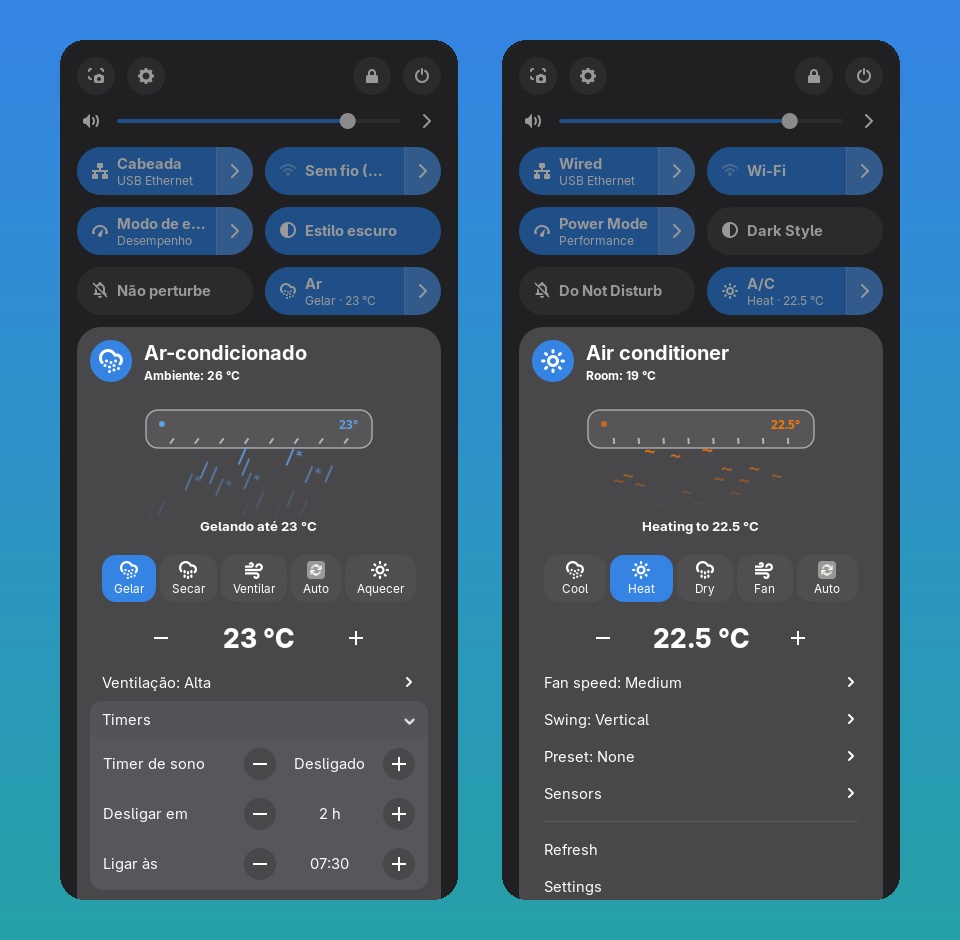
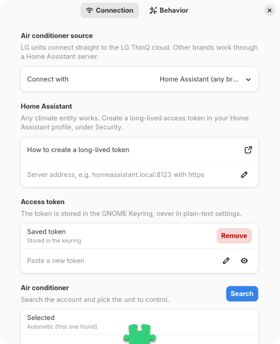

Your air conditioner, one click away.
Brisa is a GNOME Shell extension that puts your A/C in Quick Settings: power, temperature, modes, fan, swing, timers and sensors, with a live animation of what the unit is doing right now.
Try it: this is the same animation the extension draws in the menu.
Everything your unit can do
The menu is built from the capabilities your device reports, so you see exactly the controls your model supports, and nothing it doesn't.
Live animation
Airflow colour follows the mode and its speed follows the fan. The vanes sweep while swing is on, and the flow calms down when the room reaches the target.
One-click control
Toggle power from Quick Settings. Pick a mode and the unit turns on in it. Several temperature clicks become a single request.
Timers
Sleep timer, turn off in a few hours, and turn on or off at a set time, every 30 minutes.
Air direction and features
Vertical and horizontal swing, special winds, energy saving, display light, purification and presets.
Sensors
Room temperature, humidity, PM2.5, air quality and filter life, when your unit has them.
Private by design
Tokens stay in the GNOME Keyring, and Brisa talks only to the LG cloud or to your own Home Assistant, with no analytics of any kind.
Works with your brand
Two ways in: LG's official cloud API, or Home Assistant for everything else.
LG ThinQ
Connects directly to LG's official ThinQ Connect API with a Personal Access Token created on LG's site, without any extra server to run.
Home Assistant, for any brand
Every Home Assistant climate entity works, through your server's REST API and a long-lived token.
Native to GNOME
Built with GNOME Shell's own widgets and libadwaita settings, so it follows your light or dark style and accent colour.


Install
Clone the repository and install it for your user, then log out and back in:
git clone https://github.com/Lciarallo/brisa.git cd brisa make installOpen Extensions → Brisa → Settings and choose LG ThinQ or Home Assistant.
For LG, create a token at connect-pat.lgthinq.com. For Home Assistant, create a long-lived token in your profile, under Security.
Paste the token (it goes to the GNOME Keyring), press Search and pick your unit.
A one-click install from extensions.gnome.org and the Extension Manager app is on the way.
Security
- Tokens are stored in the GNOME Keyring (libsecret), never in dconf.
- HTTPS with certificate checks. Plain http is accepted only for Home Assistant on your local network, and the settings warn about it.
- Redirects are refused so the token is never replayed to another host. Responses are size-capped, and every id used in a URL is validated.
- There is no telemetry, and the only libraries used are GNOME's own: GJS, libsoup and libsecret.